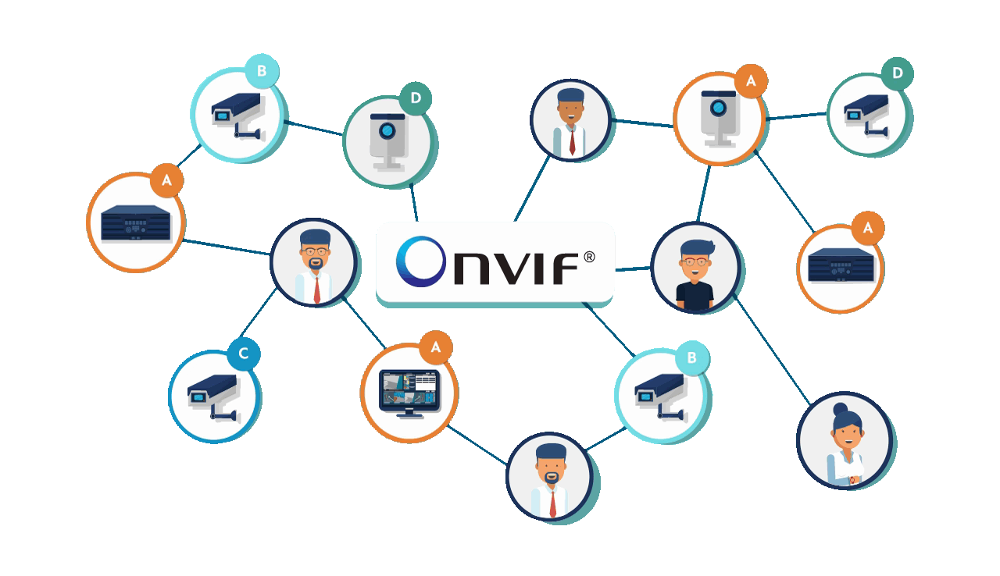
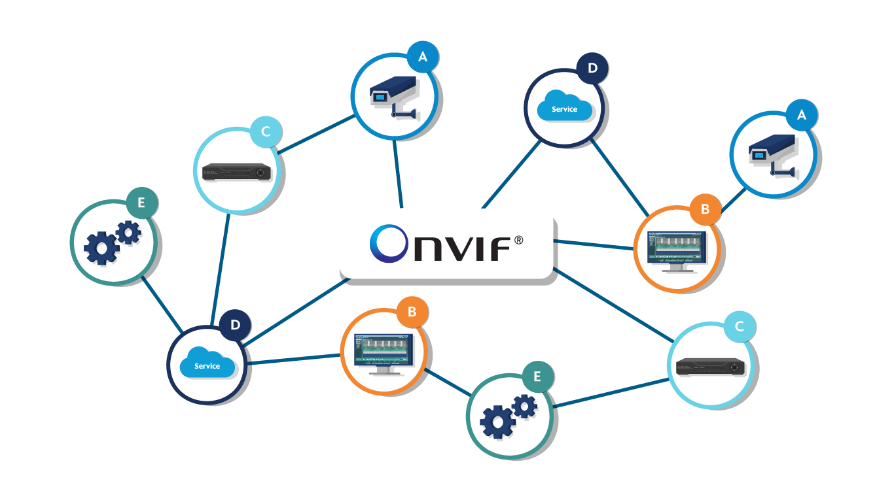
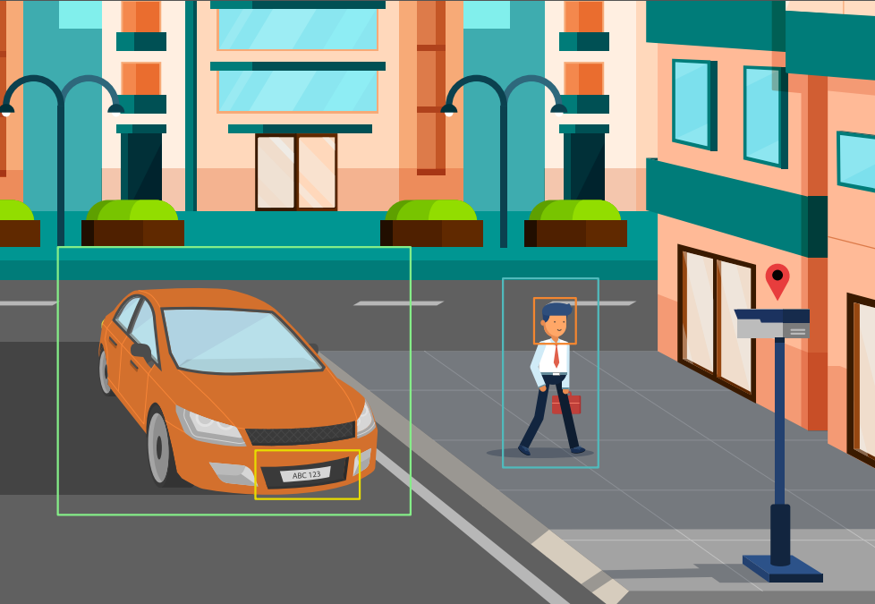
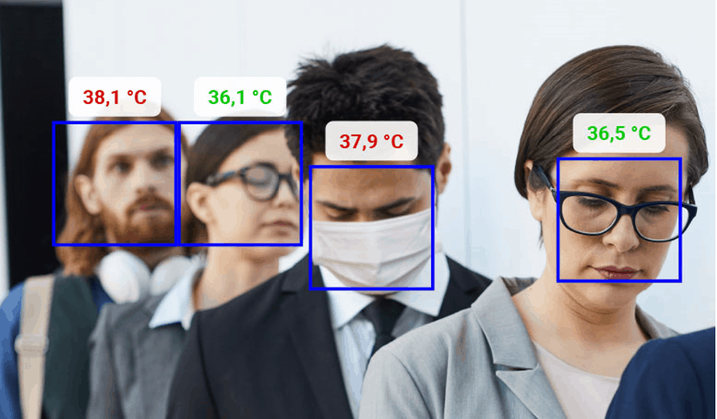
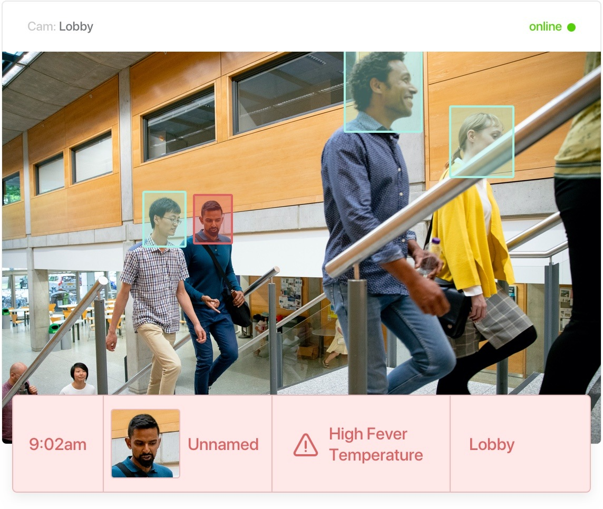
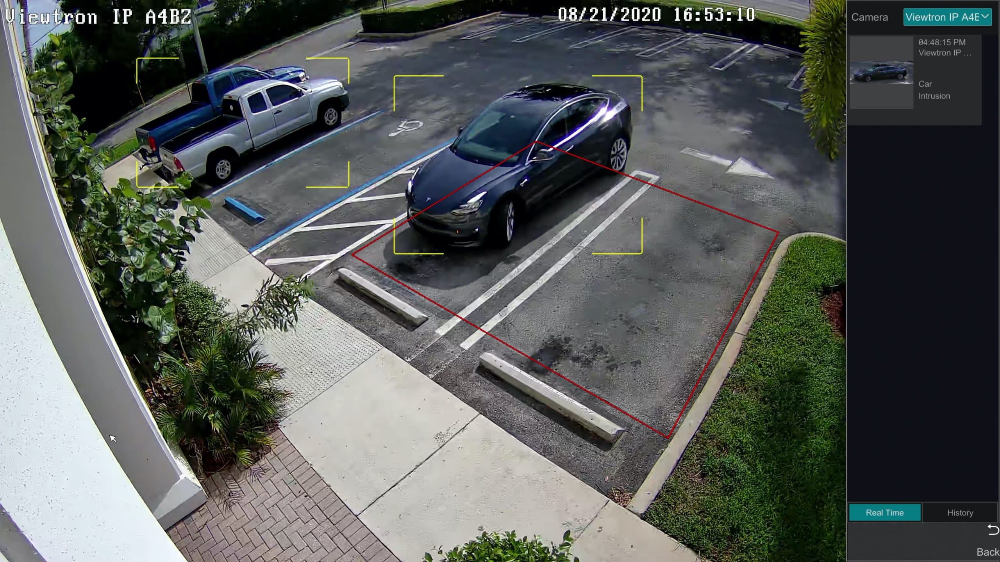
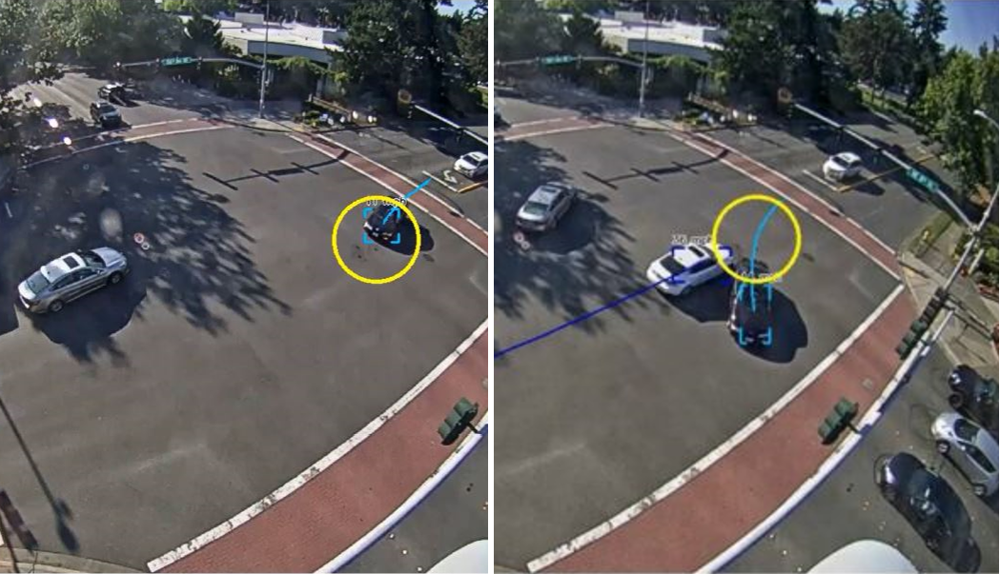
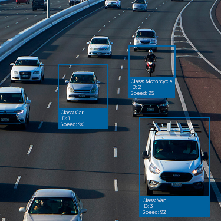
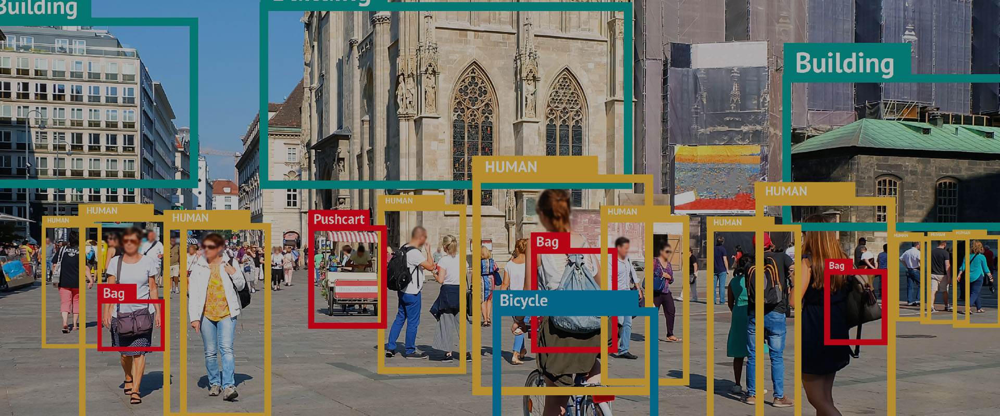

{{template "Header"}}
{{template "Menu"}}

<!-- index -->
<div class="index">
    <!-- Header -->
    <header class="w3-display-container w3-content w3-wide" style="max-width:1500px;">
        
        <div class="w3-center">
            <h1 class="w3-xxlarge">
                <span class="w3-padding w3-black w3-round-medium w3-text-deep-orange w3-card-4"><b>NONVIF</b></span>
                <span class="w3-hide-small w3-text-white w3-xlarge w3-border-bottom"
                    style="text-shadow:2px 2px 0 rgb(0, 0, 0)">Project</span>
            </h1>
        </div>
    </header>
    <!-- End Header -->

    <!-- Main Content -->
    <div class="w3-content w3-padding" style="max-width:1564px">

        <!-- Project Topic -->
        <div class="w3-container w3-padding-32">
            <h3 class="w3-text-white w3-border-bottom w3-border-light-grey w3-padding-16 w3-xxlarge"
                style="text-shadow:2px 2px 0 rgb(0, 0, 0)"><b>Topic</b>&nbsp;
                <i class="fa-solid fa-user w3-text-pink"></i>
            </h3>
            <div class="w3-margin-top w3-padding w3-black w3-round-xxlarge w3-card-2">
                <h1 class="w3-xlarge">
                    <div class="w3-text-aqua w3-xlarge">
                        <i class="fa-solid fa-hashtag"></i>
                        การประยุกต์ใช้โปรโตคอล
                        ONVIF
                        เพื่อรองรับการจัดการกล้องไอพีและการสตรีมวิดีโอผ่านเว็บไซต์
                    </div>
                </h1>
            </div>
            <div class="w3-margin-top w3-padding w3-black w3-round-xxlarge w3-card-2">
                <h1 class="w3-xlarge">
                    <div class="w3-text-deep-orange w3-xlarge">
                        <i class="fa-solid fa-hashtag"></i>
                        Application of the
                        ONVIF Protocol to support IP
                        camera management
                        and
                        video streaming through
                        websites
                    </div>
                </h1>
            </div>
            <div class="w3-bar">
                <p class="w3-text-white w3-xlarge" style="text-shadow:2px 2px 0 rgb(0, 0, 0)">
                    &nbsp;&nbsp;&nbsp;&nbsp;&nbsp;
                    This project is an implementation of the ONVIF protocol on a web interface. It involves creating a
                    web page to support
                    video streaming from an Android application called 'IP Webcam.' This app simulates an IP camera that
                    supports the ONVIF
                    protocol and uses ONVIF protocol functions to retrieve various camera data from IP Webcam and
                    display it on the web page.
                </p>
            </div>
        </div>
        <!-- End Project Topic -->

        <hr>

        <!-- About -->
        <div class="w3-row w3-padding-16">
            <div class="w3-col m6 w3-padding-large w3-hide-small" style="margin-top: 150px;">
                
            </div>
            <div class="w3-col m6 w3-padding-large">
                <h1 class="w3-center w3-text-blue" style="text-shadow:2px 2px 0 rgb(0, 0, 0)">
                    <b>ONVIF Protocol </b>
                    <i class="fa-regular fa-file-code w3-text-pink"></i>
                </h1>
                <h3 class="w3-center w3-text-white" style="text-shadow:2px 2px 0 rgb(0, 0, 0)">What is ???</h3>
                <p class="w3-large w3-text-white">Open Network Video Interface Forum (ONVIF)
                    It is a protocol created to standardize communication between different types of network video
                    devices such as IP
                    cameras, video encoders and network video recorders. The ONVIF protocol provides a common language
                    that allows these
                    devices to share video and other data. via network
                    <span class="w3-tag w3-yellow w3-round-large w3-card-2">regardless of the manufacturer or model of
                        the device.</span>
                </p>
                <p class="w3-large w3-text-white">The ONVIF protocol offers several benefits to users and network video
                    equipment manufacturers. Some of the key benefits
                    include:
                    <br>
                </p>
                <p class="w3-large w3-text-aqua" style="text-shadow:2px 2px 0 rgb(0, 0, 0)">
                    ๐ Working together :
                    <span class="w3-text-white"> ONVIF allows different brands of network video equipment to able to
                        communicate This makes it easy to build a
                        multi-vendor video surveillance system. <br>
                    </span>
                    ๐ Flexibility :
                    <span class="w3-text-white"> ONVIF supports a wide range of video codecs, resolutions, and frame
                        rates, making it easy to integrate different types
                        of cameras and other devices. in one system <br>
                    </span>
                    ๐ Easy to integrate :
                    <span class="w3-text-white"> ONVIF simplifies the process of integrating different types of devices.
                        to the CCTV system This reduces the time and
                        effort required to configure and manage the system. <br>
                    </span>
                    ๐ Future use :
                    <span class="w3-text-white">By using standard protocols such as ONVIF, organizations can ensure
                        their video surveillance systems are compatible with
                        new equipment and technologies. that may be launched in the future
                    </span>
                </p>
            </div>
        </div>
        <!-- End About -->

        <!-- Profile ONVIF -->
        <div class="w3-row-padding">
            <h3 class="w3-text-white w3-padding-16 w3-xxlarge" style="text-shadow:2px 2px 0 rgb(0, 0, 0)">
                <b>Profiles ONVIF</b>&nbsp;
                <i class="fa-solid fa-file w3-text-pink"></i>
            </h3>
            <div class="w3-light-green w3-round-xlarge w3-col l3 m6 w3-margin-bottom w3-padding-top-24">
                
                <h3><b>Profile S</b></h3>
                <p class="w3-opacity-min">Basic video streaming</p>
                <p>๐ Video streaming and configuration
                    <br><br><br><br><br><br><br><br><br><br><br>
                </p>
                <p>
                    <a href="https://www.onvif.org/profiles/profile-s/">
                        <button class="w3-button w3-light-grey w3-hover-white w3-block w3-round-xxlarge">More
                        </button>
                    </a>
                </p>
            </div>
            <div class="w3-aqua w3-round-xlarge w3-col l3 m6 w3-margin-bottom w3-padding-top-24">
                
                <h3><b>Profile T</b></h3>
                <p class="w3-opacity-min">Advanced video streaming</p>
                <p>๐ H.264 / H.265 video compression <br>
                    ๐ Imaging settings <br>
                    ๐ Motion alarm and tampering events <br>
                    ๐ Bi-directional audio <br>
                    ๐ <span class="w3-border-bottom w3-text-red">Video Streaming <br></span>
                    ๐ <span class="w3-border-bottom w3-text-red">Metadata Streaming
                        <br></span><br><br><br><br><br>
                </p>
                <p>
                    <a href="https://www.onvif.org/profiles/profile-t/">
                        <button class="w3-button w3-light-grey w3-hover-white w3-block w3-round-xxlarge">More
                        </button>
                    </a>
                </p>
            </div>
            <div class="w3-light-green w3-round-xlarge w3-col l3 m6 w3-margin-bottom w3-padding-top-24">
                
                <h3><b>Profile G</b></h3>
                <p class="w3-opacity-min">Edge storage and retrieval</p>
                <p>๐ Configure, request and control recording <br>
                    ๐ Receive audio and metadata stream <br><br><br><br><br><br><br><br><br><br></p>
                <p>
                    <a href="https://www.onvif.org/profiles/profile-g/">
                        <button class="w3-button w3-light-grey w3-hover-white w3-block w3-round-xxlarge">More
                        </button>
                    </a>
                </p>
            </div>
            <div class="w3-aqua w3-round-xlarge w3-col l3 m6 w3-margin-bottom w3-padding-top-24">
                
                <h3><b>Profile M</b></h3>
                <p class="w3-opacity-min">Metadata and events for analytics applications</p>
                <p>๐ Analytics configuration and information query for metadata <br>
                    ๐ Configuration and streaming of metadata <br>
                    ๐ Generic object classification support <br>
                    ๐ Metadata definition for geolocation, vehicle, license plate, human face and body <br>
                    ๐ Event interfaces for object counter, face and license plate recognition analytics <br>
                    ๐ Sending events through metadata stream, ONVIF event service or over MQTT <br>
                    ๐ Rule configuration for events <br>
                </p>
                <p>
                    <a href="https://www.onvif.org/profiles/profile-m/">
                        <button class="w3-button w3-light-grey w3-hover-white w3-block w3-round-xxlarge">More
                        </button>
                    </a>
                </p>
            </div>
        </div>
        <!-- End Profile ONVIF -->

        <hr>

        <!-- Features Section -->
        <div class="w3-row w3-padding-64" id="menu">
            <div class="w3-col l6 w3-padding-large">
                <h1 class="w3-center w3-text-blue" style="text-shadow:2px 2px 0 rgb(0, 0, 0)"><b>Features Projects</b>
                    <i class="fa-solid fa-feather w3-text-pink"></i>
                </h1>
                <div class="w3-container w3-padding-top-32 w3-text-white"
                    style="padding: 50px; text-shadow:2px 2px 0 rgb(0, 0, 0)">
                    <div class="w3-left">
                        <h3><i class="fa-solid fa-arrow-right"></i> &nbsp; &nbsp; Signup page</h3>
                        <h3><i class="fa-solid fa-arrow-right"></i> &nbsp; &nbsp; Login page</h3>
                        <h3><i class="fa-solid fa-arrow-right"></i> &nbsp; &nbsp; Logout page</h3>
                        <h3><i class="fa-solid fa-arrow-right"></i> &nbsp; &nbsp; Forget Password</h3>
                        <h3><i class="fa-solid fa-arrow-right"></i> &nbsp; &nbsp; Home page</h3>
                    </div>
                    <div class="w3-right">
                        <h3><i class="fa-solid fa-arrow-right"></i> &nbsp; &nbsp; Cameras page</h3>
                        <h3><i class="fa-solid fa-arrow-right"></i> &nbsp; &nbsp; Dashboard page</h3>
                        <h3><i class="fa-solid fa-arrow-right"></i> &nbsp; &nbsp; About page</h3>
                        <h3><i class="fa-solid fa-arrow-right"></i> &nbsp; &nbsp; Portfolio page</h3>
                        <h3><i class="fa-solid fa-arrow-right"></i> &nbsp; &nbsp; Add - Remove camera</h3>
                    </div>
                </div>
            </div>

            <div class="w3-col l6 w3-padding-large">
                
            </div>
        </div>
        <!-- End Features Section -->

        <hr>

        <!-- Expand the project -->
        <div class="w3-container w3-padding-32">
            <h1 class="w3-text-white" style="text-shadow:2px 2px 0 rgb(0, 0, 0)">
                <b>Further development of the project : </b>
                <i class="fa-solid fa-cube w3-text-pink"></i>
            </h1>
        </div>

        <div class=" w3-row-padding">
            <div class="w3-col l6 m6 w3-margin-bottom">
                <div class="w3-display-container">
                    <div class="w3-display-topleft w3-lime w3-padding w3-xlarge">Temperature</div>
                    
                </div>
            </div>
            <div class="w3-col l6 m6 w3-margin-bottom">
                <div class="w3-display-container">
                    <div class="w3-display-topleft w3-lime w3-padding w3-xlarge">Mask Check</div>
                    
                </div>
            </div>
        </div>

        <div class=" w3-row-padding">
            <div class="w3-col l6 m6 w3-margin-bottom">
                <div class="w3-display-container">
                    <div class="w3-display-topleft w3-lime w3-padding w3-xlarge">Temperature & Location</div>
                    
                </div>
            </div>
            <div class="w3-col l6 m6 w3-margin-bottom">
                <div class="w3-display-container">
                    <div class="w3-display-topleft w3-lime w3-padding w3-xlarge">Area & Car</div>
                    
                </div>
            </div>
        </div>

        <div class="w3-row-padding">
            <div class="w3-col l6 m6 w3-margin-bottom">
                <div class="w3-display-container">
                    <div class="w3-display-topleft w3-lime w3-padding w3-xlarge">Direction Car</div>
                    
                </div>
            </div>
            <div class="w3-col l6 m6 w3-margin-bottom">
                <div class="w3-display-container">
                    <div class="w3-display-topleft w3-lime w3-padding w3-xlarge">Car Type</div>
                    
                </div>
            </div>
        </div>

        <div class="w3-row-padding">
            <div class="w3-col l6 m6 w3-margin-bottom">
                <div class="w3-display-container">
                    <div class="w3-display-topleft w3-lime w3-padding w3-xlarge">Car Speed</div>
                    
                </div>
            </div>
            <div class="w3-col l6 m6 w3-margin-bottom">
                <div class="w3-display-container">
                    <div class="w3-display-topleft w3-lime w3-padding w3-xlarge">Overall</div>
                    
                </div>
            </div>
        </div>

        <hr>
        <!-- End xpand the project -->

        <!-- Link Referent -->
        <div class="w3-container w3-center">
            <a href="https://www.dropbox.com/scl/fo/u5jpjdt5kl9rkvd1dxl3g/h?dl=0&rlkey=a2478l6wdbykoqslig7ipcwto">
                <h2 style="font-size: 40px; margin-top: 10px; text-shadow:2px 2px 0 rgb(255, 0, 106);">
                    <span
                        class="w3-black w3-hover-pink w3-hover-text-white w3-text-white w3-card-4 w3-round-xlarge w3-padding w3-card-2">
                        <i class="fa-brands fa-dropbox w3-padding-small w3-text-white"></i>
                        My Dropbox
                    </span>
                </h2>
            </a>

            <a href="https://github.com/Nuntakorn-Buu/NONVIF">
                <h2 style="font-size: 40px; margin-top: 30px; text-shadow:2px 2px 0 rgb(255, 0, 106);">
                    <span
                        class="w3-black w3-hover-pink w3-hover-text-white w3-text-white w3-card-4 w3-round-xlarge w3-padding w3-card-2">
                        <i class="fa-brands fa-github w3-padding-small w3-text-white"></i>
                        My Github
                    </span>
                </h2>
            </a>
        </div>
        <!-- End Link Referent -->

        <hr>

        <!-- Image Camera -->
        <div class="w3-container w3-center">
            
        </div>

    </div>
    <!-- End Main Content -->

    <!-- Footer -->
    <footer class="w3-xlarge w3-center w3-black w3-padding-16">
        <p>Powered by :
            <a href="/portfolio" title="Portfolio" target="_blank" class="w3-hover-text-pink w3-large">Nuntakorn
                Sopap.</a>
        </p>
    </footer>
    <!-- End Footer -->

</div>
<!-- End index -->

</div>

</body>

</html>